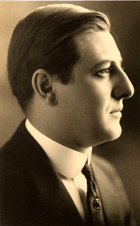

#8750 Ich kämpfe um dich
Alternativ: Spellbound
Auszeichnungen: 1 Oscars gewonnen für 5 Oscars nominiert


 IMDB-Wertung: 7.6 / 10
IMDB-Wertung: 7.6 / 10  Metascore: 0
Metascore: 0 
Dr. Constance Petersen (Ingrid Bergman) is a psychiatrist at Green Manors mental asylum. The head of Green Manors has just been replaced, with his replacement being the renowned Dr. Anthony Edwardes (Gregory Peck). Romance blossoms between Dr. Petersen and Dr. Edwards but Dr. Edwards starts to show odd aversions and personality traits. It is discovered that he is an impostor, and amnesiac, and may have killed the real Dr. Edwardes. Dr. Petersen is determined to discover the truth through unlocking the secrets held in the impostor's mind, a process which potentially puts her and others' lives at risk.
Jahr: 1945
Dauer: 117 Minuten
FSK: 16
Land: USA Studio: United ArtistsTonspuren:
Untertitel:
Auflösung: 1080p (1488x1080) Größe: 5959 MB
Genre: Thriller, Liebe, Mystery,
Regisseur:  Alfred Hitchcock
Alfred Hitchcock
Drehbuch: Ben Hecht
Soundtrack: Miklós Rózsa
Darsteller:
 Ingrid Bergman als Dr. Constance Petersen
Ingrid Bergman als Dr. Constance Petersen Gregory Peck als John Ballantyne
Gregory Peck als John Ballantyne- Michael Chekhov als Dr. Alexander Brulov
 Leo G. Carroll als Dr. Murchison
Leo G. Carroll als Dr. Murchison- Rhonda Fleming als Mary Carmichael
- John Emery als Dr. Fleurot
 Norman Lloyd als Mr. Garmes
Norman Lloyd als Mr. Garmes- Bill Goodwin als House Detective
 Steven Geray als Dr. Graff
Steven Geray als Dr. Graff Donald Curtis als Harry
Donald Curtis als Harry Wallace Ford als Stranger in Hotel Lobby
Wallace Ford als Stranger in Hotel Lobby- Art Baker als Det. Lt. Cooley
 Regis Toomey als Det. Sgt. Gillespie
Regis Toomey als Det. Sgt. Gillespie-  Paul Harvey als Dr. Hanish
- Jean Acker als Matron (uncredited)
 Irving Bacon als Railway Gateman (uncredited)
Irving Bacon als Railway Gateman (uncredited)- Harry Brown als Gateman (uncredited)
- Joel Davis als John Ballantine as a Boy (uncredited)
- Jacqueline deWit als Nurse (uncredited)
- Edward Fielding als Dr. Anthony Edwardes (uncredited)
 Alfred Hitchcock als Man Leaving Elevator (uncredited)
Alfred Hitchcock als Man Leaving Elevator (uncredited)- Matt Moore als Policeman at Train Station (uncredited)
 Addison Richards als Police Captain (uncredited)
Addison Richards als Police Captain (uncredited)- Erskine Sanford als Dr. Galt (uncredited)
 Dave Willock als Bellboy (uncredited)
Dave Willock als Bellboy (uncredited)- Richard Bartell als Ticket Taker (uncredited)
- Teddy Infuhr als John Ballantine's Brother (uncredited)
- Victor Kilian als Sheriff (uncredited)
- George Meader als Hallett - Railroad Clerk (uncredited)
- Constance Purdy als Dr. Brulov's Housekeeper (uncredited)
- Janet Scott als Norma Cramer (uncredited)
- Clarence Straight als Secretary at Police Station (uncredited)
Datei: X:\1900-1949\Ich kämpfe um dich (1945, FSK16, 1488x1080).mkv seit 26.04.2018
Festplatte: HD 1900-1970
 Es gibt insgesamt 80 Filme in der Gruppe '1900-1949'
Es gibt insgesamt 80 Filme in der Gruppe '1900-1949'